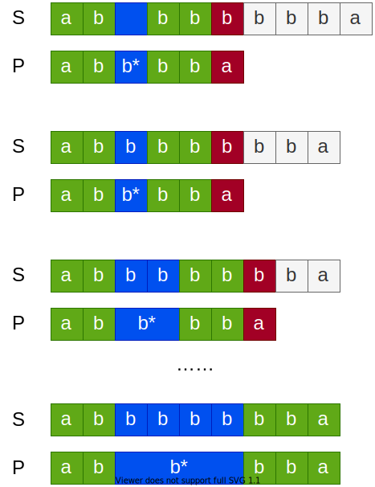
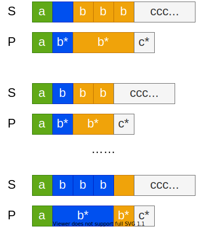

一点点找回手感，容我继续水小题号的 Hard。
这次做的是 10 号题：正则表达式匹配。
英文：https://leetcode.com/problems/regular-expression-matching/
中文：https://leetcode-cn.com/problems/regular-expression-matching/
理解题意
一句话题意
实现一个只有 . 和 * 的正则表达式子集，对给定的 字符串 s 和 模式串 p ，返回是否 全文匹配 。
.匹配任意单个字符
*匹配零个或多个前一个元素
例子
见测试用例
约束
s可能为空，且只包含从a-z的小写字母。p可能为空，且只包含从a-z的小写字母，以及字符.和*。
测试用例
每篇题解，都会强调 准备纸笔 和 单元测试 。为此在做这道题时，还顺便写了 《如何快速生成单元测试》。
不多解释，直接贴代码：
|
|
篇幅关系，例子以外的测试用例，留给大家自己想。
刷题新手基础差，题目见得少，一开始没有思路是正常的。但将对题意的理解翻译成测试用例，还有根据题目约束列出边界条件，细心一点总是可以做到的。偶尔有理解盲区，也很正常，多练习就好。
以这道题为例，如果认真看题目给的约束，马上就能添加几个边界条件：
|
|
直接动手
之前一直强调，先从简单粗暴的解法入手，再逐渐改进，比没有思路干耗强。如果是比赛，解决之后没有更好的思路，不妨提交看看，也许测试数据强度不高，又或者其实想多了没有更好的解法，直接就通过了。如果是面试，不能一步到位最优解，也不妨给出初步答案，重点展现改进的思路。如果是平时练习，可以逐渐打磨，积累自己的 SOP。
等题目见多了，找到窍门，可以一下子想几步，就没必要一步步跟着看，可以直接跳到后面部分，或者直接关闭文章走人。（我是认真的，如果你看到题目直接想到了 最优子结构 和 状态转移 ，就没有必要停留。）
当然可能也会有人觉得，思路展开得还不够细。确实，限于篇幅，不太可能从最『耿直』的代码开始，每个小改进贴一次代码。中间跳过的部分，如果你觉得有必要，可以自己推算一下。
分析题目
我们很容易发现，难点是 * ，也就是那句『匹配 0 到 多个』，就是这句话让复杂度暴增。
如果把 * 去掉，只需要从头到尾逐个字符匹配，任意一个字符不匹配就可以直接返回 false。没有任何例外。
|
|
一旦加入 * ，事情就变复杂了。举例 abbbbbbba 和 abb*bba ：

假定 * 尽量少匹配字符（简称懒汉策略），从匹配 0 个字符开始（是的，不要忘了可以匹配 0 个字符），继续往下试，直到发现不匹配。这时不能像没有 * 时那样直接返回不匹配，而是要回到 * 之前匹配的位置，尝试让 * 多匹配一个字符，把剩下的再来一遍。不行？再来一遍。又不行？再来一遍……
直到
- 哇，剩下的都匹配上了。true
- 噢，
b*遇到了b以外的字符。false
回溯法
后面剩余的字符串每次都要再尝试匹配一遍，低效暂且不管。关键发现后面的不匹配，得回到 b* 匹配的位置。
b* 的位置，还有在 s 里的匹配位置，记录的临时变量在后面继续匹配时被覆盖了？那不行，得存起来。
多给一套临时变量？那再来一个 c* , d* , e* 怎么办？只能用栈！
这种搜索答案时遇到选择，把选择点存起来 ，先选一个分支走下去，走不通时 回到选择点继续 的做法，叫 回溯法 。那个选择点，叫回溯点。以前上课，是这样帮助学员记忆的：『能进则进，不能进则换，不能换则退』。这里的 进 ，指选一个分支往下走； 换 指在回溯点换一个分支； 退 指当前回溯点所有分支都走不通，退回上一个回溯点。
把理解翻译成代码：
|
|
回溯要用到栈，有两个选择：
自己管理一个栈。遇到选择分支就将回溯点压栈，要回溯就弹栈。
优点是避免了函数调用的开销，缺点是不直观容易绕晕。
直接递归，利用函数栈保留回溯点。调用下一层函数相当于压栈，返回一层相当于弹栈。
优缺点刚好反过来。
这里为了直观，选择了直接递归。注意控制局部变量的数量，调用函数的开销也没有想象中大。
其它要点：
- 理论上，可以每匹配一个字符就递归一层，这样代码最简洁。但
*以外的匹配并不复杂，沿用前面写的循环即可，仅仅遇到*才回溯，减少调用栈的深度。 - 从左到右匹配和从右到左，效率上没有什么差别，因为不匹配的部分在哪是随机的。但是从左到右总是要多读一个字符判断是否
*，而从右到左可以在读到*时再多读一个字符组成匹配项。
测试一下，通过。
动态规划
不过，如果你生成比较大、比较复杂的测试数据，会发现回溯法的用时特别多，轻易上到秒级别。
原因其实前面已经提到过了，那就是每次回溯，剩余的字符串都要再尝试匹配一遍 。
这里面有没有重复劳动？我们再来看一个例子 abbbccccccca 和 ab*b*c* ：

前半段 abbb 和 ab*b* 有多种匹配方式。前面匹配之后，接着判断余下 ccccccca 和 c* 部分。
后面不匹配？可能前面匹配多了或者少了字符，换一种方式匹配后，又回到后半段。因为当前的代码没有记录，并不知道后半段的状态重复出现，又运算了一遍。这些运算量就浪费掉了。
如果能保存运算过的结果就好了。
缓存子问题的解
上次讲 二分查找 时，说到一个优化的思路：只获取 最小的必要信息，否则会为不需要的信息付出额外的运算。
那么这次是另一个很重要的思路： 发现并消除重复运算。
具体到动态规划（Dynamic Planning，以下简称 DP），就是：
- 定义子问题；
- 开辟额外空间，缓存子问题的最优解；
- 当引用重叠子问题（overlapping sub-problems）的解时，读取缓存，来避免重复运算。
要应用 DP 有两个关键条件：
存在重叠子问题。
DP 本质上仍然是 “Brute-Force” 搜索答案，只是做了巧妙的去重。如果不存在重叠子问题，费劲缓存没有意义。
子问题有最优子结构。
最优子结构（optimal substructure）是指，全局问题的最优解包含的子问题解，也是最优解。适合贪心算法的问题也有同样特性。
区别在于，贪心算法能直接从局部最优推出全局最优，DP 则不一定。DP 的全局最优解，是部分子问题最优解的组合。不一定所有子问题的解都能用上，但用上的一定是最优解。
这其实很好理解：缓存的就是子问题最优解， 如果全局最优包含的不是最优解，缓存就没有意义。
即使对同一个问题，这两个条件也不是固定不变的，是否成立有时依赖于如何定义子问题。要 恰当地定义和分割子问题 ，满足这两个条件，将复杂问题逐渐分解成简单子问题，并缓存子问题的解。这需要 分治法 作为前置知识，篇幅所限，有机会再补坑。
回到题目，我们将子问题 $ DP_{is, ip} $ 定义为 s[is:] 与 p[ip:] 是否匹配（注：s[is:] 表示从下标 is 一直到结尾的子串，子串右下标缺省表示取到末尾），那么全局就是 $ DP_{0, 0} $ 。全局解和子问题解的递推关系为：
$$
\left\{
\begin{array}{lr}
DP_{is, ip} = match(s[is],p[ip]) \land DP_{is+1, ip+1} & (p[ip+1]\ is\ not\ *) \\
DP_{is, ip} = DP_{is, ip+2} \lor (match(s[is],p[ip]) \land DP_{is+1, ip}) & (p[ip+1]\ is\ *)
\end{array}
\right.
$$
翻译成大白话就是，当前子问题匹配，需要 1. 当前位置两边的字符匹配 且 2. 余下的子问题匹配。* 的特殊处理后面就着代码说。
重叠子问题上面已经给了例子。至于最优子结构，将字符串分割成不同部分进行匹配，需要每一部分都匹配，才能得出整体匹配。全局解，包含局部解。而子问题 $ DP_{is, ip} $ 匹配与否，只有唯一解，相当于最优解。
子问题的解称为状态，这种根据上一阶段的状态计算出当前状态的推导式，称之为 状态转移方程 。
有状态转移方程，就可以写代码了。这时又有两种选择：
Top-down
先尝试引用，如果发现解不存在，再去计算。计算时引用到的解如果不存在，再递归去计算。换言之， 不用不算，用到再算 。
优点是，没有被最终答案（直接或间接）引用的子问题，不会被计算 。缺点是，需要先自顶向下分解，然后到了最里层返回时计算，需要用到栈或者递归，有额外的内存和函数调用开销。
这种方式又被称为 记忆化（Memorized）/ 备忘录（Memorization）方法。
Bottom-up
或者不管用不用得上，从最小的子问题开始，构造相邻的状态，直到获得全局解为止。
优缺点刚好反过来。
记忆化 Top-down
先看 Top-down 的代码：
|
|
跟回溯法细节上的差异：
回溯法为了避免不必要的递归和回溯，
*以外的匹配都是直接在循环内处理，没有必要调用函数。但这里每次都要 尽可能少匹配字符， 然后交给递归处理 。这样是为了子问题分割的 粒度尽可能小，让每个（被引用到的）子问题的解都有缓存。为了达到第一点，
*的匹配分成两种：要么匹配 s 空串消耗 pattern，要么匹配 s 单个字符不消耗 pattern。不同时消耗 s 和 p 的字符 。这一条是主要的难点。（不消耗是指，虽然*匹配了字符，但是 p 串下标不移动，留在原地继续匹配 s 串下一个字符）以
bbbb匹配b*为例，分了 5 步（不包括失败的尝试）：b*匹配 4 次b都保留b*，然后第 5 次匹配 空串才消耗掉。Top-down DP 分解和实际计算的方向是反的。从左到右递归引用子问题，计算时就是从右到左组合。实际写就会发现，从右到左引用，下标处理麻烦一些。（如果从右到左，子问题 $ DP_{is, ip} $ 就要定义成
s[0:is]和s[0:ip]是否匹配。）
Bottom-up
Bottom-up 的代码会简洁一些：
|
|
除了 p 子串为空时不用计算（即 ip 为 len(p) ，此时 p[ip:] 为空），Bottom-up 所有子问题都会算一遍（包括 s 子串为空也要实际判断，因为 p 有可能匹配空串）。没有必要区分是否已经计算，状态矩阵直接用 bool 值。
也因为这样，Bottom-up 对子问题的划分 不重不漏 的要求更严格一些。Top-down 里如果不小心一次匹配了多个字符，导致不是每个解都有缓存，出现重复计算，只是影响运行效率。而这里如果子问题分得不够细，跳过了某个子问题的计算，后续引用到的就可能是错误值。
对比
运行速度
三种解法都通过了单元测试。剩下就是要比较运行速度。在复杂度分析之前，可以直观地看一下基准测试（Benchmark Test）。
暂时没有发现自动生成基准测试代码的工具，还好手敲很简单：
|
|
把三种实现依次重命名为 isMatch1 、 isMatch2 、 isMatch3，对应三个基准测试。先用题目自带的用例测试：
|
|
（每列的含义依次为：测试名、循环次数、平均耗时、平均内存分配、平均内存分配次数，默认情况下测试时间为 1 秒。）
可以看到，在数据量小、用例简单时，DP 完全不占优势，回溯法快 10 倍左右。毕竟光初始化内存就落后了。
这时，将测试用例改为这两个：
|
|
这两个特意构造的用例， s 串特别长，重复字符多，p 串 * 也多；最终结果是 false，让代码一直搜索到最后；不匹配的字符一个在最左一个在最右，抵消因为方向导致的优势。（最初准备的用例长度为 500，结果运行起来非常慢，才缩短为 200 。）看看结果：
|
|
结果一下子就逆转了。DP 比回溯法快了 约 4 个数量级。而且很明显，如果继续加大测试强度，这个差距会继续放大。
两种 DP 的对比， Top-down 的速度又要比 Bottom-up 快了约 30% 。跳过引用不到的子问题，起了作用。
复杂度
接下来看一下复杂度。以下假设字符串 s 的大小为 S，p 的大小为 P。
动态规划
DP 的复杂度很好算。$ DP_{is, ip} $ 一共有 SP 个组合，也就是有这么多个子问题。对于每个子问题，需要判断当前下标指向的字符是否匹配，然后引用相邻子问题，每个子问题需要常数时间。换言之整体的时间复杂度就是 $ O(SP) $ 。
相应地，额外内存主要是缓存子问题解的二维数组，空间复杂度也是 $ O(SP) $ 。
Top-down 记忆化根据不同数据，可能会跳过部分子问题，但没有改变复杂度阶。
回溯法
回溯法的复杂度计算复杂一些。如果没有 * ，那么时间复杂度只是 $ O(S) $。加入 * 是复杂度的主要来源。参考基准测试的两个例子，构建类似 aaaaaaaaac 和 .*.*.*b 这样的最坏情况，p 串里都是 .* ，最后一个字符总是匹配失败无法提前退出。
考虑 递归函数 isMatchBT 的调用次数。对 isMatchBT(s, p, is, ip)，ip 点左边一共有 $ ip / 2 $ 个 .* ，匹配的过程相当于把 $ is $ 个元素分成 $ ip/2 $ 组，也就是在 $ is + 1 $ 个点里选取 $ ip / 2-1 $ 个点分割，数量为 $ \mathrm{C}_{is + 1}^{ip / 2-1} $ 。
对于一次函数调用，调用之前在 s 串匹配一个字符，然后调用函数，不考虑进入函数之后的开销，需要常数时间。进入函数后分两种情况：一是普通字符串的匹配，二是递归调用函数。考虑最坏的情况，都是 * 产生的递归调用，函数内部的开销在统计其他函数调用时计算。换言之，总的递归函数调用次数就是总的复杂度。
$$ \sum_{is=0}^S \sum_{ip=0}^{P/2} \mathrm{C}_{is + 1}^{ip / 2-1} $$
太久不看数学，已经不记得怎么算这种式子了。时间关系，只好以后再计算和验证了。
空间开销主要在函数调用栈上，每次函数调用使用常数内存，如果不考虑内存释放，那么空间复杂度和时间复杂度一致。但实际上，函数返回栈上的空间就释放了，空间复杂度跟最大调用深度相关，也就是 $ O(P) $ 。
把最快的 Top-down DP 提交，时间： 0 ms，打败 100% 的提交；内存：2.4 MB，打败45.05% 。这道题的测试数据很弱，其实回溯也是可以过的，就是比较慢。
更新：
我实际做题时用的是 Top-down，其余代码都是为了写文章额外写的，所以没有太注意优化。
公众号发出之后，有朋友提醒，Bottom-up 只引用到最近的两排状态，空间复杂度可以优化到 $ O(P) $ 。
确实如此，优化之后，综合时间和空间复杂度，Bottom-up 才是最佳解法。Top-down 快 30% 毕竟是在极端 case 测得，一般快不了这么多。
|
|
用同样的数据再跑一次 Benchmark，不仅内存用少了，还比 Top-down 还要快。
|
|

本文为本人原创，采用知识共享 “署名-非商业性使用-相同方式共享” 4.0 (CC BY-NC-SA 4.0)”许可协议进行许可。
本作品可自由复制、传播及基于本作品进行演绎创作。如有以上需要，请留言告知，在文章开头明显位置加上署名（Jayce Chant）、原链接及许可协议信息，并明确指出修改（如有），不得用于商业用途。谢谢合作。
请点击查看协议的中文摘要。